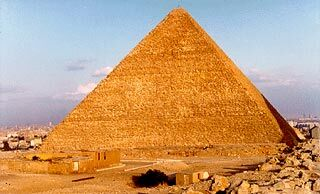
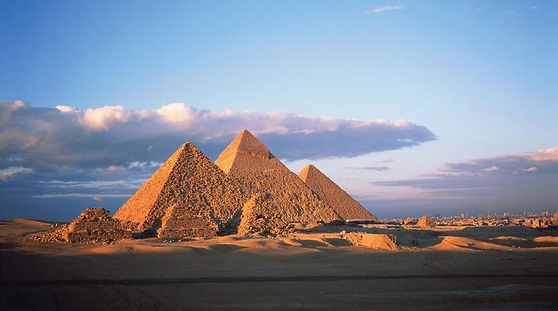
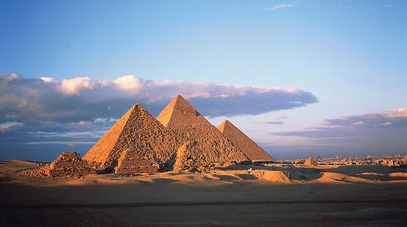

Este cea mai veche dintre minuni dar și singura care poate fi admirată și în prezent. Denumită și Marea Piramidă (este cea mai impozantă din cele trei alaturi de care se află), dimensiunile sale sunt impresionante: la bază masoară 230,4 metri, iar în înalțime are 147 metri. Cea mai mare construcție din istoria omenirii, cladită fără ajutorul mașinilor, Piramida lui Keops este construită din blocuri de calcar (în exterior) și granit (în interior). Laturile sale se unesc în unghiuri perfect egale de 51052' și se îndreaptî către cele patru puncte cardinale ale Pământului. O capodoperă a abilităților tehnice și inginerești ale vechilor egipteni, Piramida impresionează și prin precizia geometrică, prin taietura dreaptă și îmbinarea perfectă a pietrelor care o compun (unele dintre ele cântăresc 16 tone!).

 


Conform scrierilor lui Herodot, a fost nevoie de 20 de ani pentru ca această construcție megalit să fie ridicată de către aproximativ 100,000 de oameni.